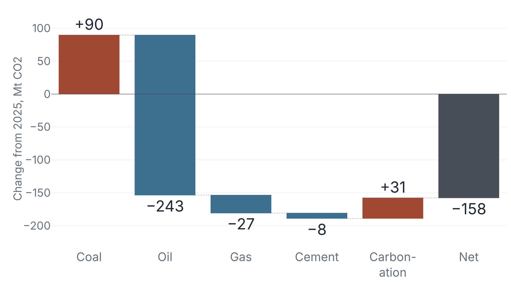
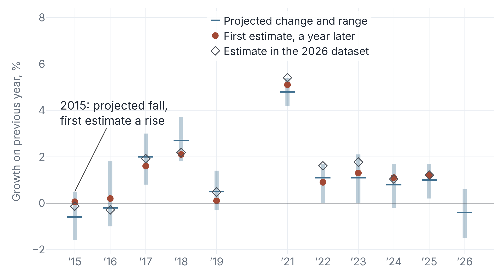

Oil's drop is bigger than 2026's whole projected fall in fossil CO2
The Global Carbon Budget projects a 0.4% fall with a range that reaches a 0.6% rise, and its 2015 projection of a similar fall was first tallied as a rise.
A projected 0.4% fall in fossil CO2, with a range that crosses zero
The Global Carbon Budget 2026, the Global Carbon Project's annual account of CO2 sources and sinks, projects fossil CO2 emissions to fall 0.4% this year, to 38.2 Gt CO2, with a range of −1.5% to +0.6%.1 That range is a 68% interval, about ±1σ.2 Oil accounts for all of the fall and more, and a jump in land-use change emissions still lifts total CO2 to the highest annual figure in the series.3 The budget has projected a fall of about this size before. In 2015 the first estimate from real data was a small rise.2
Oil falls 243 Mt while coal and India rise
Each bar adds one fuel's change from 2025, ending at the net. Oil's bar, −243 Mt, is longer than the net bar, −158 Mt. Coal adds 90 Mt. The second red bar is cement carbonation, CO2 that cement takes back up from the air, which the budget subtracts from fossil emissions. That sink shrinks, adding 31 Mt.

Oil is the only fuel whose range excludes zero (−2.6% to −1.2%). India is the only country or region whose range excludes zero, and it pushes the other way: +4.4% (+1.7% to +7.1%).1 That is about 141 Mt, against about 112 Mt off China's −0.9%, both derived by us from 2025 levels.3
The oil fall is, by our count, the sixth-largest annual fall in oil CO2 since 1959, after 2020, 1992, 1981, 1980 and 2009.3 The US-Iran conflict began on 28 February 2026, and Brent crude averaged $124 a barrel in October.4 The Global Carbon Project's press release credits “expansion of solar and wind power and the Iran conflict”,5 and ScienceDaily's edited version of the University of Exeter's release says emissions “may finally be turning a corner”.6
A companion paper in Nature Climate Change, by six of the budget's authors, separates the causes. Electric vehicles explain about 20% of the oil fall, and solar and wind growth that would have cut coal by 0.38 Gt did not stop coal rising. Pump prices ran 10% to 50% above 2025 in the USA, China and the EU, and a mean 20% rise against a 1.9% fall would imply a short-run demand elasticity of about 0.1 [1.9 ÷ 20]. The authors conclude the decrease “is not a sign that emissions have peaked from the transition to cleaner energy, but is probably a short-term response to higher oil prices and supply constraints”.7
Land use lifts total CO2 to 43.3 Gt
The left column is what people add, and the right is where it goes. They match because the budget makes them balance, and the land sink does the balancing: it is computed “as the residual of the other projections”, so every other term's error ends up in it.1
Total CO2 is fossil plus land-use change, 38.2 + 5.1 = 43.3 Gt. Against 2025 the fossil term falls 0.16 Gt and land-use change rises 0.73 Gt, so the total rises 0.57 Gt [0.73 − 0.16]. The preprint attributes the land-use rise partly to “increased emissions from Southeast Asia in response to the emerging El Niño”, with confidence that “remains low”.1 The 43.3 Gt is the highest total in the dataset, ahead of 2025's 42.75 Gt.3 The margin is about a sixth of the ±3.2 Gt (1σ) on one year's total. Most of that is shared by adjacent years, so it overstates the uncertainty on the change, for which the budget gives no figure. The preprint calls 2026 “marginally above the 2025 level”.1
The remaining carbon budget for a 50% chance of holding warming to 1.5 °C is 150 Gt CO2, counted from 1 January 2027.1 At 2026's rate that lasts three and a half years [150 ÷ 43.3 = 3.464]. Without the fossil fall it would run out about five days sooner [150 ÷ 43.46 = 3.451].
Past projections missed by 0.37 points on average
Each pale bar is the range the budget published for a year's growth in world fossil CO2, and the tick its central projection.2 The red dot is the first estimate from actual data, a year later. The diamond is what the 2026 dataset now says.

All ten first estimates landed inside their ranges. A 68% interval should miss about three times in ten, but ten years is a small sample. The central projection missed the first estimate by 0.37 points on average and 0.66 at most, in 2015, when the budget projected −0.6% (−1.6% to +0.5%).9 The first estimate was +0.06%, and the 2026 dataset now has −0.13%.
The range covers growth only and “excludes the uncertainty of the baseline (i.e., 2025) level.”1 Later revisions move a year's growth too: 2022's first estimate of +0.9% now reads +1.61%, a revision larger than the whole projected change for 2026.
The 2026 central value of −0.4% sits about one average miss from zero. Oil's fall has a range that excludes zero, and the net fall does not. A miss the size of 2015's would turn the projected fall into a rise of about 0.3%.
Sources
- Friedlingstein et al. · Global Carbon Budget 2026, ESSD preprint under review (10 November 2026)
- Friedlingstein et al. · Global Carbon Budget 2026, supplement
- Global Carbon Project · Global Carbon Budget 2026 datasets
- U.S. Energy Information Administration · Short-Term Energy Outlook, November 2026
- Global Carbon Project · Fossil CO2 emissions decrease in 2026 (press release)
- ScienceDaily · Global fossil fuel emissions set to fall in 2026, but total CO2 keeps rising
- Le Quéré et al. · A further acceleration of clean energy is needed for global CO2 emissions to peak and decline, Nature Climate Change
- Le Quéré et al. · Global Carbon Budget 2016, Earth System Science Data 8, 605–649
- Le Quéré et al. · Global Carbon Budget 2015, Earth System Science Data 7, 349–396